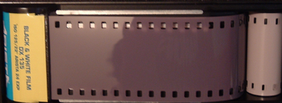

Film photography is the art of taking photos on photographic film. Photographic film according to Wikipedia
is a strip/sheet of film that has light-sensitive crystals in it. When the crystals are exposed to light, an image is created
that can be developed into a photograph.
Why use film?
Some might ask, "Why would you take a limited amount of photos with film when you can take digital photos?"
To that I say, when you have a limited amount of photos per roll of film, you have to think more carefully about the pictures
you take. This means the quality of the pictures you take will be higher. Also, most film cameras don't require
batteries. Therefore, you don't have to worry about charging your camera.
With enough practice and research you will soon be able to take amazing photos like this amazing dude.
Want more Info?
Here is a video from one of my favorite photography channels. This will give more
helpful details on how to make beautiful photos.